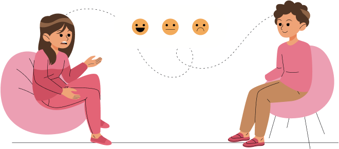

What are psychometric tests?
Psychometric tests are tests which aim to measure objectively a person’s ability or certain aspects of their personality.
These tests provide objective information about different areas of candidates’ skills for example the extent of their knowledge, motivations,
Devised by occupational psychologists, aim of psychometric testing is to provide reliable method of selecting the best applicants using tests that are fair to all applicants.
The British Psychological Society defines a psychometric Tests as: ‘an instrument designed to produce a quantitative assessment of some psychological attribute or attributes.’
Main types of Psychometric Tests.
Two main types of psychometric tests are Personality Questionnaires and Aptitude Tests.
What is a personality Questionnaire?
Personality refers to the patterns of thoughts, feelings and behavior that are unique to each individualand these are characteristics that distinguish an individual from another.
Personality implies thepredictability of how one reacts under different circumstances.Personality test is a device or instrument for assessing or evaluating personality. They are designed tomeasure attitudes, habits and values.Personality tests do not fall under category of pass and fail.
What is a Aptitude Tests?
Aptitude Tests refers to the patterns of thoughts, feelings and behavior that are unique to each individualand these are characteristics that distinguish an individual from another.
Aptitude Tests thepredictability of how one reacts under different circumstances.Personality test is a device or instrument for assessing or evaluating personality. They are designed tomeasure attitudes, habits and values.Personality tests do not fall under category of pass and fail.
Aptitude Test Practice
SHL Tests
Employer Tests
Verbal Reasoning
Assessment Centres
Mechanical Reasoning
Diagrammatic Reasoning
Deductive Reasoning
Criteria Cognitive Aptitute Test
Critical Thinking
Logical Reasoning
Personality Tests
Cappfinity Tests
Situational Judgement
Inductive Reasoning
Spatial Reasoning
Error Checking
In-Tray Exercises
Personality Questionnaires
Verbal And Critical Reasoning
Finance And Management
In-WorkTests
Graduate Benchmark

Non-Verbal reasoning, mechanical comprehension and data interpretation
Common Verbal Reasoning Tests
Publisher
Combination Tests
Common Numerical Psychometric Tests
CCAT Tests

Accuracy Tests
Industry Tests
Aptitude Test
Numerical Reasoning Test
What psychometric tests measure?
There is a battery of psychometric tests, some measure individual’s ability to understand the writtenword, or to reason with numbers. Others measure individual’s ability to solve mechanical problems, orfollow instructions accurately, or be able to understand data presented in a variety of ways. Personalityquestionnaires, assessing everything from motivation to leadership quality to working preferences
Learn MoreWhat is format of psychometric tests?
ts 2023, so pencil and paper tests are not favored anymore, psychometric tests are conducted onlineand are always in format that of multiple-choice questionnaire. Result reports are generatedimmediately.
Learn MoreIndustries that take psychometric tests?
Psychometric tests have been used for decades in two main fields other than recruitment and these towfields are career guidance and education
Career Guidance
Psychometric tests are used to help individuals gain better understanding of their abilities, aptitudes, interests, and motivations, they are highly effective when choosing or changing a career.
Education
Psychometric tests are used by many educational establishments to select the ablest pupils
Who uses psychometric tests?
Psychometric tests are used widely to recruit and retain staff by industrial and corporate houses, police, civil services, local authorities, armed forces, the fire services, financial institutions, retail sector companies, the motor industry, IT industry, management consulting, airlines, power industry, virtually every large or medium sized organizations use psychometric testing for recruiting.
Types of psychometric tests?
Primarily, there are 3 types of psychometric tests.
Intelligence
Aptitude and Skills
Personality
For Management jobs, you have to take four main types of test, which are
Verbal Reasoning
Numerical Reasoning
Abstract Reasoning
Personality Questionnaires
There are many other vocational related tests such as spatial reasoning, mechanical comprehension, fault diagnosis or accuracy tests.
Are psychometric tests fair?
Psychometric tests measure ability, and virtually all accredited psychometric tests which measure the many different aspects of personality, are devised by occupational psychologists. They are developed with an aim to provide reliable method of selecting best applicants and to design tests carefully so that they are as fair as possible. All psychometric tests, except personality tests, have clear right and wrong answers and are therefore free from interpretation bias found in the marking of essay-type exam are fair.
After getting job, do I still need to take psychometric tests.
Organizations that use psychometric tests to recruit use them later for internal team selection and career development of individual staff members.
Learn MoreWhat you will learn?
- Answer this question is “PRACTICE”, Brainmeasures is one dedicated portal where you can practice as much as you want.
- Practice will familiarize you with different types of psychometric tests.
- Once you practice it takes away the fear factor.
- Since psychometric tests are timed, practice makes you used to working under time pressure.
- Train your brain to concentrate.
- Speeds you up.
- Enables you to gather confidence and understand your strengths and weaknesses.
Cheating – Is it possible?
Brainmeasures online exams are proctored, we offer human and automatic proctor exams, our proctor system is developed using advanced AI and ML technologies, this advanced system makes cheating impossible as it tracks your eye movement, typing speed, keystrokes, face and voice detection and much more.
Preparing for a psychometric test?
You will probably hear this a lot, “it is impossible to improve your score in a psychometric test.”
Don't pay any attention. It isn't true. Why?
As any other test psychometric test also a standard and a process and processes can be studied measures and improved. Brainmeasures psychometric practice platform for individuals is a scientifically designed platform developed in collaboration with experienced psychologists and test administrators. Brainmeasures practice tests will give candidates control over the process which in turn will significantly improve scores.
Psychometric Tests
Brainmeasures psychometric tests help employers access the knowledge, skills,and personality of candidates, helping avert costly hiring mistakes.
Big 5 Personality Online Tests
- Understand candidate's critical and logical thinking.
- Management Level Psychometric Assessment.
- Understand and learn his Behaviour pattern.
- Gaming Tests
- Data Interpretation
- Diagrammatic and Abstract Reasoning
Few people enjoy psychometric tests. Yet if psychometric tests are the major obstacle between you and your perfect job, it is worth spending some time learning how to get beyond this obstacle. You can be proactive in achieving your best score by practicing as much as you can.
Learn MoreRecruit and Retain best people for your organization, Brainmeasures psychometric testing battery is relevant and up-to-date.
Our Focus
Brainmeasures primary focus is on developing battery of psychometric tests used by the industry to select people best suited for professional positions, depending on the skills needed in the job.
Tests such as verbal aptitude tests, quantitative reasoning tests, personality questionnaires are used to check how an individual would react or behave in different situations, written exercises are used to demonstrate individuals’ written communication skills, and interviews to allow candidates’ to demonstrate oral communication skills.
Whether you are a hiring manager or an individual who is preparing for a job, Brainmeasures psychometric tests cover each and every aspect of psychometric testing used by big organizations for their selection procedure.
Learn MoreWhy Choose Brainmeasures Psychometric Assessment Platform.
Individuals
Brainmeasures Psychometric Assessment Platform has been developed to help you prepare for the assessment and gain some practice and tips and techniques to enable you to achieve the best results you possibly can. With a little preparation you will be able to improve your score quite dramatically.
Peter Rhodes, renowned author of the Critical Verbal Reasoning, offers excellent guidance on the significant improvements that can be made in any psycho- metric test results. According to Peter Rhodes, psychometric tests are based on the assumption that they give only a glimpse or an estimate of someone's 'true score' and that their results are made up of their real level of ability plus some 'junk' factors. Junk factors' include anxiety, low expectations of success, lack of confidence, and so on, and these can all get in the way of you doing your best.
With Brainmeasures as your practice partner you can gain an edge and overcome all the difficulties and crack any kind of psychometric tests.
Hiring Managers
There are two ways in which you can use Brainmeasures Psychometric platform.
- As a stand-alone assessment which allows unfavorable candidates to be filtered out before the interview stage. If a candidate fails, they won't get a chance to put things right at the interview.
- As part of an overall assessment which includes an interview.
Evaluate, Hire and Retain best talent for your organization. Choose Brainmeasures Choose Perfection.
Brainmeasures Psychometric Testing
Psychometric tests are tests which aim to measure objectively a person’s ability or certain aspects of their personality. These tests provide objective information about different areas of candidates’ skills for example the extent of their knowledge, motivations, personality and potential.
Devised by occupational psychologists, aim of psychometric testing is to provide reliable method of selecting the best applicants using tests that are fair to all applicants.
The British Psychological Society defines a psychometric Tests as: ‘an instrument designed to produce a quantitative assessment of some psychological attribute or attributes.’
What you'll get
In-Depth Report
Our In-depth report provides detailed insight and evaluation of candidates’ personality traits and cognitive skills helping you acquire, hire and retain best talent accurate job fit.
Result Forwarding
After the candidates finish the exam, recruiter will get the notification and receive an email with detailed performance analysis report of each candidate.
Easy Test Process
Brainmeasures psychometric assessment platform is easy to use clutter free, tests are conducted online and entire dashboard has been designed with an aim to help you hire and retain best talent for your organization.
24X7 Support
Our support team is available round the clock to help and assist in case you need any support or information, just hit the chat button and our representative will make sure all your queries are handled and resolved at earliest.
Hire Right, Grow your organizations talent pool.
Use Brainmeasures Psychometric assessment tools for Employee Development. Tic all right boxes – Check the parameters you need in your employee base.
Evaluate Cognitive Abilities
Assess & identify key personality traits that can influence cultural fitment, trainability and job performance.
Positive Personality Traits
In order to determine cultural fit, trainability, and work success, one must evaluate and identify essential personality qualities. This lays the foundation of right hiring.
Understand the Value Preferences
By assessing motivation, values, and preferences, one might learn what propels and inspires a person to accomplish at work, understand the core values and build great teams.
Understand the Value Preferences
By assessing motivation, values, and preferences, one might learn what propels and inspires a person to accomplish at work, understand the core values and build great teams.
Positive Personality Traits
In order to determine cultural fit, trainability, and work success, one must evaluate and identify essential personality qualities. This lays the foundation of right hiring.
Negative Personality Traits
Measure and determine the most unfavorable characteristics that affect the security of workers, clients, and the workplace culture as a whole.
Huge reservoir of Practice Questions
Developed by experts and experienced psychiatrists
Thousands of Psychometric tests taken each day
We understand the dynamics well.
Practice any number of time
Practice and perfect your skills and crack that job interview.
Develop your psychometric thinking muscle
Practice any number of times
Complete Battery of Psychometric Tests
Get all you need for psychometric testing at one place, choose Brainmeasures.
Tests for PracticePsychometric Testing Tools To Help Build Successful Teams
Be on Point for the People Part of Your Business Equation!
Hire the Right Person
Hire the right cultural fit, with a blend of assessments tuned to find the perfect job fit.
Develop Employees Holistically
Identify key developmental areas for each employee to create a customised L&D roadmap.
Build Better Leaders
Groom leaders from employees today, to ensure the creation of a solid leadership pipeline for the future.
Information Rich, Visually Presentable Data Determined Reports
Reports that are insightful and easy to read and comprehend.
Explore Our ReportsDetailed, in-depth insightful reports
Using graphs for better comprehension
Role wise segregation of results
Universal reports
Brainmeasures Uses Industry-Leading Reliability and Validity Standards in Our Psychometric Tools
The Scientific Theories and Methods on which Brainmeasures Psychometric Assessment Tools are Based are Validated
All these factors play crucial role in hiring right canddiates that are right fit for the job.
Critical Thinking
A critical thinking test, also referred to as a critical reasoning test, measures candidates’ capacity to logically evaluate a situation and reach a conclusion by analyzing a situation, identify underlying presuppositions, formulate hypotheses, and assess arguments.
Iceberg Model
These tests reveal a lot about candidates’ personality in terms of a systems thinking tool, to identify the mental models, supporting structures, and behavioral patterns that underlie a specific occurrence.
Abstract Reasoning
A test that tests the candidates’ ability to comprehend and reason about intricate ideas that, while real, are unrelated to specific experiences, things, people, or situations is known as abstract thinking or abstract reasoning.
The Big Five Theory
The Big Five Model, also referred to as the Five-Factor Model, is a famous personality theory that describes personality as the play between five personality traits or factors. These factors or characteristics include openness to experience, conscientiousness, agreeableness, extraversion and neuroticism.
Frequently Asked Questions
.accordion-body, though the transition does limit overflow.
.accordion-body, though the transition does limit overflow.
.accordion-body, though the transition does limit overflow.
.accordion-body, though the transition does limit overflow.
.accordion-body, though the transition does limit overflow.
.accordion-body, though the transition does limit overflow.
.accordion-body, though the transition does limit overflow.
.accordion-body, though the transition does limit overflow.
.accordion-body, though the transition does limit overflow.
.accordion-body, though the transition does limit overflow.
.accordion-body, though the transition does limit overflow.
Trusted By